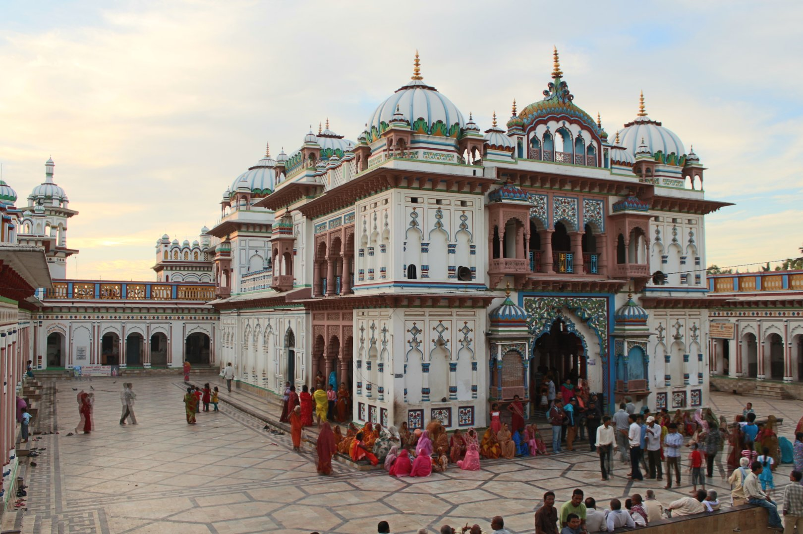
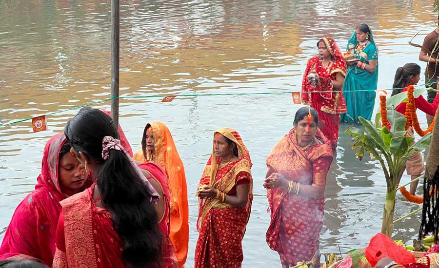

Visiting Mithila - Practical Guide
Mithila is an accessible and rewarding destination for those interested in culture, history, art, and pilgrimage. The heart of the region is Nepal's Madhesh Province, centred on Janakpur, with other key towns like Rajbiraj, Lahan, Jaleshwar, and Birgunj all reachable by road. Here is everything you need to know for your visit.

How to Get to Mithila, Nepal
| Getting to Key Cities of Mithila, Nepal | ||
|---|---|---|
| Route / Destination | From | Approximate Travel Time |
| Janakpur - By Air | Kathmandu (Tribhuvan Airport) | ~45 minutes (Buddha Air, Yeti Airlines) |
| Janakpur - By Bus | Kathmandu (New Bus Park) | 8 - 10 hours (overnight bus available) |
| Rajbiraj - By Bus | Kathmandu or Dharan | 9 - 11 hours from Kathmandu; ~2 hours from Dharan |
| Birgunj - By Bus | Kathmandu (Kalanki / New Bus Park) | 5 - 6 hours; easy gateway from India via Raxaul border |
| Jaleshwar - By Bus | Janakpur or Kathmandu | ~1.5 hours from Janakpur; 9 hours from Kathmandu |
| From India (Jaynagar border) | Jaynagar, Bihar - straight to Janakpur | 30 minutes from border to Janakpur centre |
| Indian visitors can cross into Nepal from Jaynagar without a visa. Entry is free for Indian nationals. | - | |
Must-See Places in Mithila (Nepal)
Janaki Mandir, Janakpur
The most important pilgrimage site in Mithila. The white marble temple was built in 1911 and is dedicated to Goddess Sita. Open daily for worship. Most spectacular during Vivah Panchami (November/December).
Ram Mandir & Ram Sita Bibah Sthal, Janakpur
Located near Janaki Mandir, the Ram Mandir is dedicated to Lord Ram. The nearby Ram Sita Bibah Sthal marks the sacred spot believed to be the site of Ram and Sita's wedding - the holiest ground in all of Mithila.
Sacred Ponds (Kunds) of Janakpur
Janakpur has 72 sacred ponds, each with religious significance. Ganga Sagar, Dhanush Sagar, and Gangajal Kund are the most important. These ponds are the centrepiece of Chhath Puja celebrations every year, drawing thousands of devotees to their banks at sunrise and sunset.
Janakpur Women's Development Centre (Mithila Art Institute)
Founded to empower local Maithil women, this institute is where you can watch artists paint traditional Mithila art, understand the different styles (Bharni, Katchni, Godna, Kohbar), and purchase original paintings directly - ensuring your money goes to the creators.
Rajbiraj - Saptari District
The capital of Saptari, one of the most culturally authentic Mithila districts. Explore village homes adorned with traditional Mithila wall paintings, attend Chhath Puja at the Khado river, and experience the local Maithili-language bazaars and festivals.
Jaleshwar Mahadev Temple, Mahottari
One of the most revered Shiva temples in the Terai, located in Jaleshwar town. The temple attracts large numbers of pilgrims during Maha Shivaratri. The surrounding area of Mahottari district has strong Maithili cultural and literary traditions.
Gaur - Historic Heart of Rautahat
Gaur, the headquarters of Rautahat District, is one of the older towns in the Terai with deep-rooted Mithila customs. The district's villages are known for their rural folk traditions, Sama-Chakeva celebrations, and traditional cooking practices.
Madhubani & Darbhanga, Bihar (India)
Just across the border, Madhubani district is the Indian namesake of the art form. Visit village homes with painted walls and local craft centres. Darbhanga has the historic Darbhanga Palace ruins and the Sanskrit university - a day trip from Janakpur via Jaynagar.
Best Time to Visit
| Season | Months | Why Visit | Weather |
|---|---|---|---|
| Best Season | October - February | Chhath Puja, Vivah Panchami, cool and pleasant | 15°C - 28°C, dry |
| Spring | March - April | Ram Navami, mild weather, fewer crowds | 20°C - 35°C, dry |
| Avoid (monsoon) | June - September | Heavy flooding in Terai; many roads inaccessible | 30°C - 38°C, very humid |

Budget Guide
| Budget Level | Approx. Daily Cost | Typical Stay |
|---|---|---|
| Budget | NPR 1,500 - 2,500 / day (~$11 - $19) | Guesthouses, local daal-bhat meals |
| Mid-range | NPR 3,000 - 6,000 / day (~$22 - $45) | Hotel with AC, restaurant meals |
| Comfortable | NPR 7,000+ / day (~$52+) | Best hotels in Janakpur, guided tours |
Visitor Tips
Dress modestly when visiting temples. Cover shoulders and legs. Remove shoes at temple entrances.
Photography: Always ask permission before photographing artists or people. Inside temple sanctuaries, photography may be restricted.
Buy original art: When buying Madhubani paintings, buy directly from artists or certified organisations to ensure the money goes to the creator.
Language: Maithili and Nepali are spoken in Janakpur. English is understood at hotels and tourist spots. Hindi is also widely understood.
Local transport: Auto-rickshaws and cycle-rickshaws are the main way to get around Janakpur town. Bargain politely before getting in.